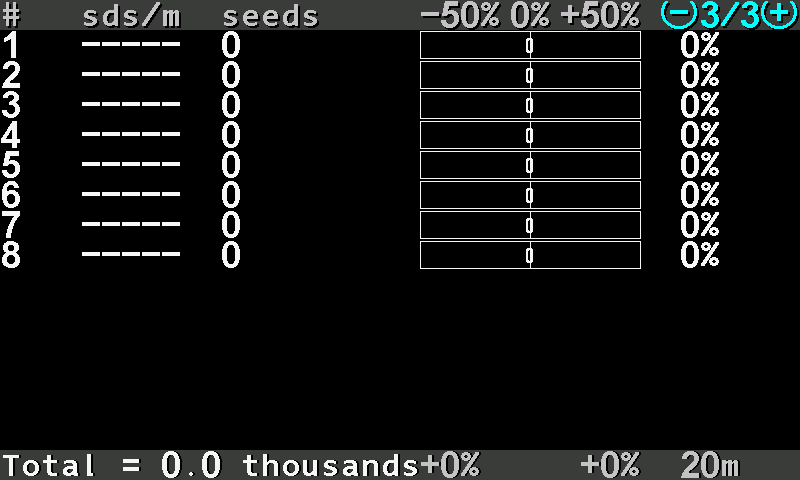

Contrôler le système après l'installation
Une procédure unique pour l'installateur — prouver pas à pas que chaque appareil répond, que chaque capteur de graines est sur son propre rang et que la machine lit correctement, puis consigner le résultat.
Faites ce contrôle une seule fois, quand le panneau et les appareils sont montés et raccordés. Chaque étape dit ce qu'il faut faire et ce que l'écran doit montrer. Si une étape ne donne pas le résultat, la dernière colonne du tableau final indique où aller.
Votre machine n'a peut-être pas tous les appareils — passez les étapes de ceux qu'elle n'a pas. Restez au niveau « Operator » (opérateur) : les fenêtres d'alarme ne s'affichent qu'à ce niveau (Niveaux d'accès).
Le contrôle
Contrôlez le profil et les appareils. Mettez le panneau sous tension et attendez l'écran d'accueil. Il ne doit y avoir aucune alarme « Connection lost », aucun indicateur blanc avec un point d'exclamation et aucun indicateur rouge avec un X. Comparez le profil à la machine : les appareils et le nombre de chacun (Le profil). Ouvrez ensuite l'écran d'état de chaque capteur (Réglages des capteurs) et parcourez-les avec « PLUS ». Chaque capteur affiche « Link: » « Normal » ; chaque capteur de graines affiche Status: Working. Voir L'écran d'état du capteur.
Un indicateur blanc n'est normal que pour un appareil qui ne fait pas partie de votre livraison (Le profil).
Vérifiez que chaque capteur de graines est sur son propre rang. Ouvrez l'écran Table avec « HOME », puis le tableau des compteurs de graines (L'écran Table). Il indique le nombre de graines ; lisez le comptage là, pas sur la vue en graines par mètre, qui n'affiche des valeurs que lorsque la machine se déplace. Remettez les mesures à zéro (Remettre à zéro les mesures de l'écran Table). Laissez tomber à la main quelques graines dans le tube de semis du rang 1 ; au lieu de graines, vous pouvez faire passer plusieurs fois dans le tube de semis un petit objet quelconque, par exemple un long collier de serrage — chaque passage est compté. Seule la ligne de la section 1 doit réagir. Faites de même avec le rang 2, puis avec chaque autre rang tour à tour. Un capteur qui réagit sur un autre rang est raccordé dans le mauvais ordre — appelez votre partenaire d'installation ou le support technique.

Le tableau des compteurs de graines d'un semoir de huit rangs : graines par section, barres d'écart, total. Vérifiez le comptage. Seulement si votre écran Table a le tableau des compteurs de graines. Remettez de nouveau les mesures à zéro. Laissez tomber un nombre connu de graines, par exemple 20, dans un tube. Lisez le chiffre de cette section sur le tableau des compteurs de graines, qui indique le nombre de graines. Sur un semoir monograine, il correspond au nombre que vous avez lâché, à une graine près, à condition que « Fraction » des capteurs de graines soit réglée pour la taille de la graine. Si le chiffre est nettement plus élevé — jusqu'au double du nombre —, la fraction est réglée trop petite pour cette graine : une grosse graine, par exemple le maïs, est alors comptée pour deux ; réglez la fraction d'après le tableau de Capteurs de graines et d'engrais. Si les deux diffèrent autrement, notez les deux nombres et donnez-les au support (Avant de contacter le support).
Contrôlez le capteur de position de travail. Seulement si la machine en a un. Relevez l'outil, puis abaissez-le. L'écran d'état du capteur doit passer de Position: Transporting à Position: Working. S'il affiche l'inverse, le réglage « Transporting position signal » du capteur est inversé (Capteurs de trémie, de position de travail et de moteur).
Contrôlez la vitesse. Roulez. Le champ de vitesse de l'écran d'accueil doit afficher un nombre en blanc. XX.X en rouge signifie que le module d'entrée du capteur de vitesse ne répond pas. Un nombre jaune alternant avec « IMITATION » signifie que la vitesse est simulée, non mesurée. « SLOWER » et « FASTER » disent seulement que vous êtes hors de la plage admise (Indicateurs de l'écran d'accueil). Si le nombre ne correspond pas à la vitesse réelle, étalonnez le capteur (Étalonner le capteur de vitesse). Si le capteur tombe en panne, voir Travailler sans capteur de vitesse.
Contrôlez les autres capteurs de la machine. Un contrôle court pour chacun :
- Capteur de trémie. Son écran d'état affiche Pin: et le niveau, "0" ou "1". Trémie remplie, le panneau ne doit pas déclencher « Hopper empty » (Trémie vide).
- Capteur de turbine. Turbine en marche, son écran d'état affiche F= en Hz et aucune alarme « Low speed of rotation » ou « High speed of rotation » (Capteur de turbine).
- Capteur de pression. Turbine en marche, son écran d'état affiche P= en kPa et aucune alarme « High pressure » ou « Low pressure » (Capteur de pression).
- Capteur d'arbre de doseur. Faites tourner l'arbre. Son écran d'état affiche F= en Hz et aucune alarme « No rotation » (Capteur d'arbre de doseur).
- Capteurs de traceurs. Chacun affiche « Link: » « Normal » sur son écran d'état (Capteurs de traceurs).
- Actionneur de jalonnage. Son écran d'état affiche Status: Pulled in, Pulled out ou Working — pas Unknown (Actionneur de jalonnage).
Consignez le résultat.
- La version du micrologiciel. Appuyez sur « MENU » sur l'écran d'accueil et choisissez « Information » dans le menu principal. La fenêtre affiche la version du micrologiciel. Notez-la.
- Notez la date, la machine et le nombre de rangs.
- Photographiez l'écran d'état d'un capteur, ou des capteurs l'un après l'autre, avec « Link: » « Normal ».
Conservez les notes et les photos. Il vous les faudra si vous devez contacter le support (Avant de contacter le support).
Si une étape échoue
| Étape | Ce que vous voyez | Où aller |
|---|---|---|
| 1 | « Connection lost » ou « No connection » | Tout appareil : liaison perdue ou type d'appareil incorrect |
| 1 | « Wrong device type! » | Tout appareil : liaison perdue ou type d'appareil incorrect |
| 1 | Indicateur blanc pour un appareil que vous avez | Mettre un capteur sous ou hors surveillance |
| 1 | « Clogged », « Light struck », « Broken » | Capteur de graines ou d'engrais obstrué, ébloui ou défectueux |
| 1 | Appareil absent du profil | Le profil |
| 2, 3 | Mauvais rang qui réagit, ou le nombre diffère | Avant de contacter le support |
| 4 | La position ne change pas ou est inversée | Capteurs de trémie, de position de travail et de moteur |
| 5 | Pas de vitesse, ou vitesse fausse | Alarmes du capteur de vitesse, Étalonner le capteur de vitesse, Travailler sans capteur de vitesse |
| 6 | Trémie, turbine, pression, doseur | Trémie vide, Turbine ou arbre de doseur : alarmes de vitesse, Pression d'air trop élevée ou trop basse |
Votre machine fait quelque chose que cette page n'explique pas ? Écrivez à support@agriwelt.com — un ingénieur vous répond.